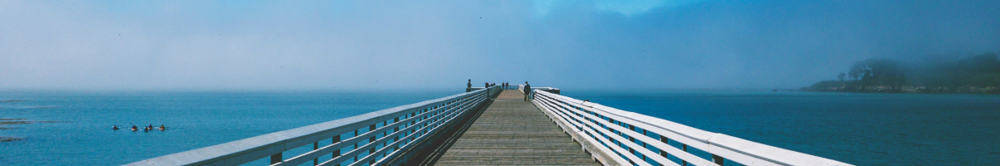

> 회사소개 > 경영이념
경영이념
Management philosophy
경영이념 소개
인재와 기술을 바탕으로 최고의 품질과 서비스 창출하 인류사회에 공헌한다

안전하고 환경 친화적이며 경제성과 편리성이 탁월한 선박 및 설비를 제공함으로써 고객만족과 삶의질 향상에 기여한다
5대 핵심가치
글로벌 일류기업으로서 지키고자 하는 삼성의 약속입니다.
- 인재제일
- 기업은 사람이다라는 삼성의 인재에 대한 믿음입니다 개인의 존엄성과 다양성 존중 법규준수 및 공정경쟁 회계의 투명성 유지 정치개입 회피 및 정치적 중립성 유지
- 최고지양
- 끊임없는 열정과 도전정신으로 항상 최고에 도전하고 세계최고를 향한 경쟁에서 당당하게 승리하기 위해 노력합니다 안전사고를 없애고 시간을 정확히 지키며 오작을 없앤다 매 순간 최선을 다하고 항상 혁신하며 세계 최고가 된다
- 변화선도
- 변하지 않으면 살아 남을 수 없다는 위기의식을 바탕으로 변화와 혁신을 실행합니다 매 순간 최선을 다하고 항상 혁신하며 세계 최고가 된다.세계 초일류 회사를 지향
- 정도경영
- 곧은 마음과 진실되고 바른 행동으로 법과 윤리를 철저하게 준수함으로써 사회로부터 신뢰받는 영속기업이 되기 위해 노력합니다 공과 사의 엄격한 구분과 회사와 타인의 지적 재산 보호와 존중 건전한 조직분위기 유지
- 상생추구
- 나보다 남을 먼저 생각한다는 삼성의 기본 철학으로 지역사회, 국가, 인류의 공동번영을 위해 노력합니다 글로벌 기업시민으로서 사회적 책임을 다하고 기업시민으로서 지역 사회와 상생 실천과 사업파트너와 공존공영의 관계 구축